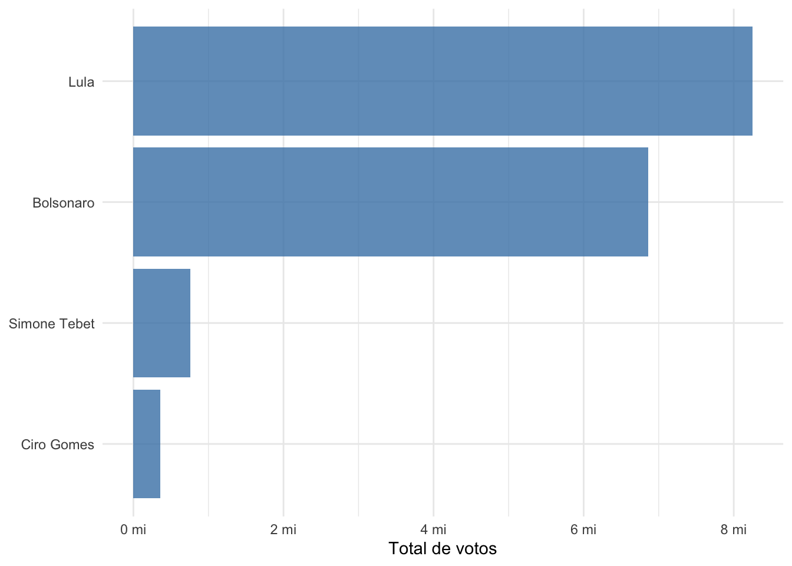
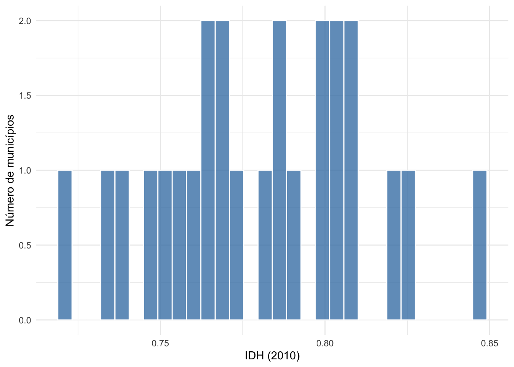
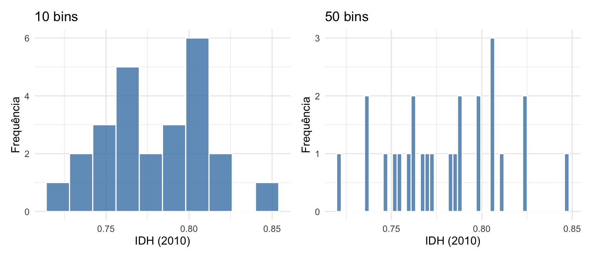
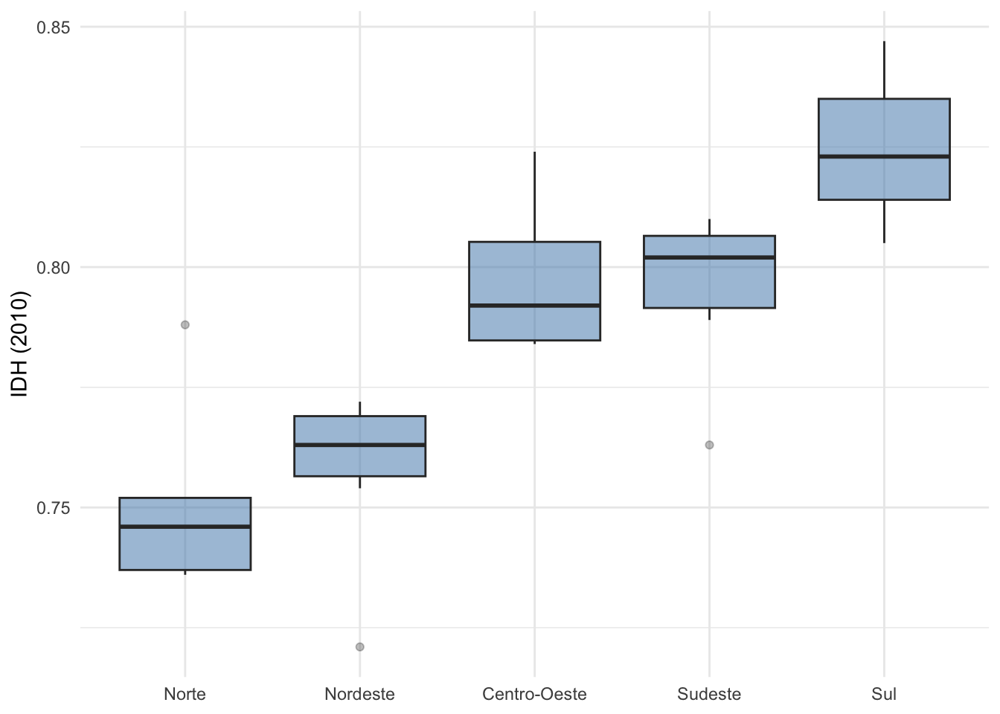
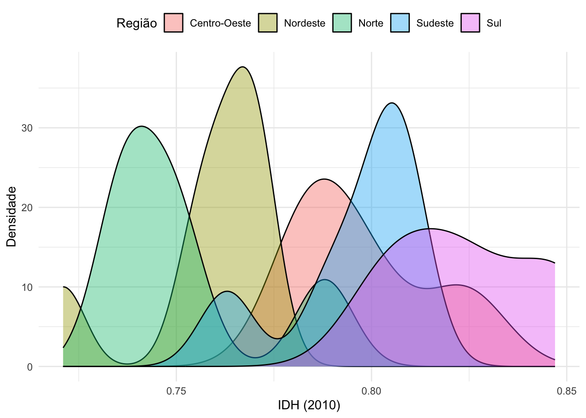
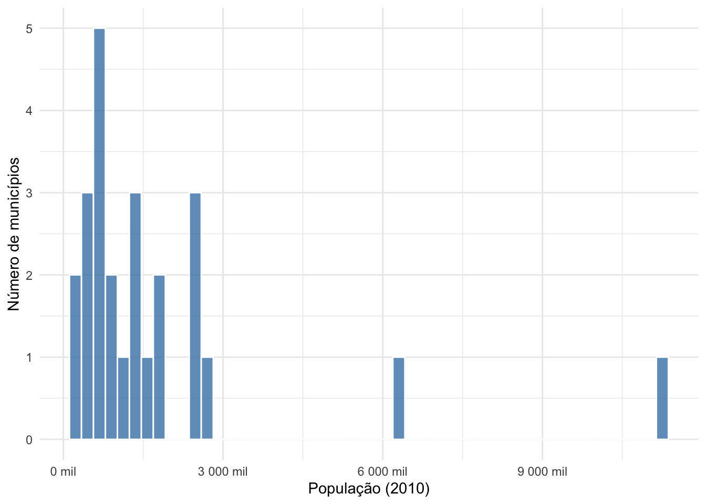
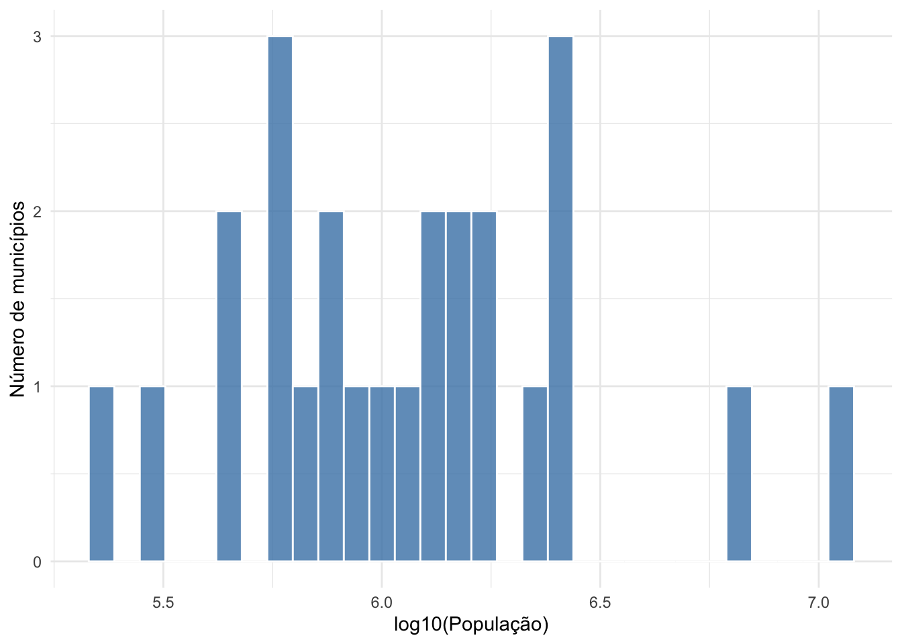

Capítulo 7 Medidas de Tendência Central e Variabilidade
Objetivos do capítulo
- Calcular e interpretar medidas de tendência central (média, mediana, moda)
- Calcular e interpretar medidas de variabilidade (variância, desvio-padrão, amplitude interquartílica)
- Construir e interpretar visualizações (histogramas, boxplots)
- Aplicar essas medidas a dados reais em R
7.1 Por que resumir dados?
O Brasil tem mais de 5.500 municípios. Suponha que você queira descrever o nível de desenvolvimento humano do país. Listar o IDH de cada município não ajuda: ninguém vai ler uma tabela com 5.500 linhas. O que precisamos são resumos: números que capturem as características essenciais da distribuição. Duas perguntas organizam esse resumo: (1) qual é o valor típico? e (2) quão espalhados estão os valores ao redor desse típico?
A primeira pergunta é respondida por medidas de tendência central (média, mediana, moda). A segunda, por medidas de variabilidade (variância, desvio-padrão, amplitude interquartílica). Kellstedt and Whitten (2015) chamam essa etapa de “getting to know your data”.
Vamos carregar os dados de IDH dos municípios brasileiros que usaremos ao longo do capítulo:
idh <- read_delim("dados/idh_municipios.csv",
delim = ";",
locale = locale(decimal_mark = ","))
glimpse(idh)## Rows: 25
## Columns: 9
## $ cod_ibge <dbl> 3550308, 3304557, 3106200, 2927408, 4106902, 2304400, …
## $ municipio <chr> "S\xe3o Paulo", "Rio de Janeiro", "Belo Horizonte", "S…
## $ uf <chr> "SP", "RJ", "MG", "BA", "PR", "CE", "AM", "PE", "RS", …
## $ regiao <chr> "Sudeste", "Sudeste", "Sudeste", "Nordeste", "Sul", "N…
## $ idh_2010 <dbl> 0.805, 0.799, 0.810, 0.759, 0.823, 0.754, 0.737, 0.772…
## $ idh_educacao <dbl> 0.725, 0.719, 0.737, 0.661, 0.768, 0.672, 0.658, 0.698…
## $ idh_longevidade <dbl> 0.855, 0.845, 0.856, 0.835, 0.855, 0.824, 0.812, 0.825…
## $ idh_renda <dbl> 0.843, 0.840, 0.841, 0.790, 0.850, 0.773, 0.750, 0.798…
## $ populacao_2010 <dbl> 11253503, 6320446, 2375151, 2675656, 1751907, 2452185,…7.2 Descrevendo variáveis categóricas
Variáveis categóricas (cujos valores representam categorias, sem ordem numérica) também precisam ser descritas. As ferramentas são diferentes: em vez de média e desvio-padrão, usamos tabelas de frequência e gráficos de barras.
7.2.1 Tabelas de frequência
Uma tabela de frequência mostra quantas vezes cada categoria aparece nos dados. Considere os dados das eleições presidenciais de 2022 no Brasil:
eleicoes <- read_csv("dados/eleicoes_2022.csv")
# Total de votos por candidato (agregando municípios)
votos_candidato <- eleicoes |>
group_by(candidato, partido) |>
summarise(total_votos = sum(votos), .groups = "drop") |>
arrange(desc(total_votos))
votos_candidato## # A tibble: 4 × 3
## candidato partido total_votos
## <chr> <chr> <dbl>
## 1 Lula PT 8249244
## 2 Bolsonaro PL 6861801
## 3 Simone Tebet MDB 758133
## 4 Ciro Gomes PDT 355023A frequência absoluta é a contagem bruta. A frequência relativa é a proporção do total:
votos_candidato <- votos_candidato |>
mutate(freq_relativa = total_votos / sum(total_votos))
votos_candidato |>
select(candidato, partido, total_votos, freq_relativa) |>
mutate(freq_relativa = round(freq_relativa * 100, 1))## # A tibble: 4 × 4
## candidato partido total_votos freq_relativa
## <chr> <chr> <dbl> <dbl>
## 1 Lula PT 8249244 50.8
## 2 Bolsonaro PL 6861801 42.3
## 3 Simone Tebet MDB 758133 4.7
## 4 Ciro Gomes PDT 355023 2.27.2.2 Gráficos de barras
A forma mais adequada de visualizar uma variável categórica é o gráfico de barras. Gráficos de pizza são uma alternativa pior: o olho humano compara comprimentos (barras) com mais precisão do que ângulos (fatias).
ggplot(votos_candidato, aes(x = reorder(candidato, total_votos), y = total_votos)) +
geom_col(fill = "steelblue", alpha = 0.8) +
coord_flip() +
scale_y_continuous(labels = scales::number_format(scale = 1e-6, suffix = " mi")) +
labs(x = NULL, y = "Total de votos") +
theme_minimal()
Figure 7.1: Total de votos por candidato nas eleições presidenciais de 2022 (1o turno). Dados agregados por município.
7.3 Descrevendo variáveis contínuas: tendência central
7.3.1 Média
A média aritmética é a medida de tendência central mais conhecida. Para uma variável \(Y\) com \(n\) observações, a média é:
\[\bar{Y} = \frac{\sum_{i=1}^{n} Y_i}{n}\]
Em palavras: some todos os valores e divida pelo número de observações.
## [1] 0.78024A média tem duas propriedades importantes. A primeira é a propriedade da soma zero: a soma dos desvios em relação à média é sempre zero.
\[\sum_{i=1}^{n}(Y_i - \bar{Y}) = 0\]
Isso significa que os valores acima da média “compensam” exatamente os valores abaixo. A segunda é a propriedade de mínimos quadrados: a média é o valor \(c\) que minimiza a soma dos quadrados dos desvios \(\sum(Y_i - c)^2\). Se alguém te pedisse para adivinhar o valor de uma observação sem nenhuma informação adicional, a média seria o melhor palpite no sentido de minimizar o erro quadrático.
A média é sensível a valores extremos. Considere cinco municípios com IDH de 0,50, 0,55, 0,60, 0,62 e 0,95. A média é 0.644. O valor 0,95 puxa a média para cima, e nenhum dos cinco municípios tem IDH próximo da média. Neste caso, a média é um resumo enganoso.
7.3.2 Mediana
A mediana é o valor que divide a distribuição ao meio: metade das observações está acima e metade está abaixo. Para calcular a mediana: ordene os valores do menor ao maior. Se \(n\) é ímpar, a mediana é o valor central. Se \(n\) é par, é a média dos dois valores centrais.
## [1] 0.784No exemplo anterior dos cinco municípios (0,50, 0,55, 0,60, 0,62, 0,95), a mediana é 0,60, um resumo mais fiel do que a média de 0.644.
A mediana é robusta a outliers: valores extremos não a afetam (ou afetam pouco). Se trocarmos o 0,95 por 0,99, a mediana continua sendo 0,60, mas a média muda.
7.3.3 Quando usar cada medida?
idh |>
summarise(
media_idh = mean(idh_2010),
mediana_idh = median(idh_2010),
diferenca = media_idh - mediana_idh
)## # A tibble: 1 × 3
## media_idh mediana_idh diferenca
## <dbl> <dbl> <dbl>
## 1 0.780 0.784 -0.00376Para o IDH, média e mediana são próximas, o que sugere uma distribuição razoavelmente simétrica. Mas considere a distribuição da população dos municípios:
idh |>
summarise(
media_pop = mean(populacao_2010),
mediana_pop = median(populacao_2010),
razao = media_pop / mediana_pop
)## # A tibble: 1 × 3
## media_pop mediana_pop razao
## <dbl> <dbl> <dbl>
## 1 1809678. 1221979 1.48A média da população é várias vezes maior que a mediana. Isso acontece porque a distribuição de tamanho de municípios é fortemente assimétrica à direita: a maioria dos municípios é pequena, mas alguns poucos (São Paulo, Rio de Janeiro, Brasília) são enormes e puxam a média para cima. Neste caso, a mediana é mais representativa do município “típico”.
A regra geral é:
- Se a distribuição é simétrica, média e mediana coincidem — use qualquer uma.
- Se a distribuição é assimétrica, a mediana é mais representativa do caso típico.
- A média é mais útil quando queremos agregar (a média da renda de um grupo vezes o número de pessoas dá a renda total), e é a base de grande parte da inferência estatística que veremos nos próximos capítulos.
7.4 Medidas de variabilidade
O valor típico não basta para descrever uma distribuição. Dois conjuntos de dados podem ter a mesma média e distribuições completamente diferentes. Considere dois grupos de municípios, A e B, ambos com IDH médio de 0,65. Em A, todos os municípios têm IDH entre 0,60 e 0,70. Em B, os municípios variam de 0,40 a 0,90. A média sozinha não distingue esses cenários.
7.4.1 Amplitude
A medida mais simples de variabilidade é a amplitude: a diferença entre o maior e o menor valor.
## # A tibble: 1 × 3
## minimo maximo amplitude
## <dbl> <dbl> <dbl>
## 1 0.721 0.847 0.126A amplitude é fácil de calcular, mas depende de apenas dois valores (o mínimo e o máximo) e é sensível a outliers. Um único município com valor atípico muda a amplitude inteira.
7.4.2 Variância
A variância mede o quão distantes, em média, os valores estão da média. Para cada observação, calcule o desvio em relação à média \((Y_i - \bar{Y})\). Se simplesmente somarmos esses desvios, o resultado é zero (propriedade da soma zero). Para evitar isso, elevamos os desvios ao quadrado antes de somar:
\[s^2 = \frac{\sum_{i=1}^{n}(Y_i - \bar{Y})^2}{n-1}\]
Por que dividimos por \(n - 1\) e não por \(n\)? A resposta completa envolve o conceito de graus de liberdade, que discutiremos em detalhe no Capítulo 11. A intuição é: quando usamos a média amostral \(\bar{Y}\) (que foi estimada dos próprios dados) em vez da média populacional (que não conhecemos), perdemos um “grau de liberdade”. Dividir por \(n-1\) corrige esse viés e produz uma estimativa mais precisa da variância da população.
## [1] 0.0009695233A variância tem uma desvantagem prática: sua unidade é o quadrado da unidade original. Se o IDH é medido em uma escala de 0 a 1, a variância está em “IDH ao quadrado”, o que não é intuitivo.
7.4.3 Desvio-padrão
O desvio-padrão é a raiz quadrada da variância:
\[s = \sqrt{s^2} = \sqrt{\frac{\sum_{i=1}^{n}(Y_i - \bar{Y})^2}{n-1}}\]
O desvio-padrão tem a mesma unidade da variável original. Podemos interpretá-lo como “em média, os valores se afastam \(s\) unidades da média”.
## [1] 0.03113717Para o IDH dos municípios brasileiros, o desvio-padrão é cerca de 0.031. Isso nos diz que o município típico está a aproximadamente 0.031 pontos de IDH da média.
Comparar desvios-padrão entre grupos pode ser informativo:
idh |>
group_by(regiao) |>
summarise(
n = n(),
media = round(mean(idh_2010), 3),
dp = round(sd(idh_2010), 3)
) |>
arrange(desc(media))## # A tibble: 5 × 4
## regiao n media dp
## <chr> <int> <dbl> <dbl>
## 1 Sul 3 0.825 0.021
## 2 Centro-Oeste 4 0.798 0.019
## 3 Sudeste 6 0.796 0.018
## 4 Nordeste 7 0.758 0.018
## 5 Norte 5 0.752 0.0217.4.4 Amplitude interquartílica (IQR)
Assim como a mediana é uma alternativa robusta à média, a amplitude interquartílica (IQR, de interquartile range) é uma alternativa robusta à variância.
Os quartis dividem a distribuição em quatro partes iguais:
- \(Q_1\) (1o quartil, percentil 25): 25% dos valores estão abaixo
- \(Q_2\) (2o quartil, percentil 50): é a mediana
- \(Q_3\) (3o quartil, percentil 75): 75% dos valores estão abaixo
A amplitude interquartílica é:
\[\text{IQR} = Q_3 - Q_1\]
O IQR mede a dispersão dos 50% centrais dos dados, ignorando os 25% mais baixos e os 25% mais altos. Por isso, não é afetado por outliers.
idh |>
summarise(
Q1 = quantile(idh_2010, 0.25),
mediana = quantile(idh_2010, 0.50),
Q3 = quantile(idh_2010, 0.75),
IQR = IQR(idh_2010)
)## # A tibble: 1 × 4
## Q1 mediana Q3 IQR
## <dbl> <dbl> <dbl> <dbl>
## 1 0.759 0.784 0.805 0.0460O IQR também é usado para definir outliers. A regra convencional é: qualquer valor abaixo de \(Q_1 - 1{,}5 \times \text{IQR}\) ou acima de \(Q_3 + 1{,}5 \times \text{IQR}\) é considerado um outlier. Esta é a regra usada nos boxplots que veremos a seguir.
De onde vem o fator 1,5? Ele é derivado da distribuição normal. Em uma distribuição normal, \(Q_1\) e \(Q_3\) estão a aproximadamente \(\pm 0{,}675\) desvios-padrão da média, de modo que \(\text{IQR} \approx 1{,}35\sigma\). Multiplicando por 1,5, os limites (“cercas”) ficam a cerca de \(\pm 2{,}7\sigma\) da média — o que captura aproximadamente 99,3% dos dados. Ou seja, em dados normais, menos de 1% das observações seriam classificadas como outliers. Esse ponto é importante: a regra de 1,5 × IQR pressupõe que a distribuição é aproximadamente normal. Em distribuições muito assimétricas (como a de tamanho de municípios), a regra pode classificar como “outliers” observações que são simplesmente parte da cauda longa da distribuição.
7.5 Visualização de distribuições
Gráficos revelam padrões que as estatísticas numéricas não capturam. Três visualizações são usadas com frequência: histogramas, boxplots e gráficos de densidade.
7.5.1 Histogramas
O histograma divide o intervalo de valores da variável em faixas (bins) e conta quantas observações caem em cada faixa. O eixo horizontal mostra os valores da variável; o eixo vertical, a frequência (ou a densidade).
ggplot(idh, aes(x = idh_2010)) +
geom_histogram(bins = 30, fill = "steelblue", color = "white", alpha = 0.8) +
labs(x = "IDH (2010)", y = "Número de municípios") +
theme_minimal()
Figure 7.2: Histograma do IDH (2010) dos municípios brasileiros.
Um cuidado importante: a escolha do número de bins muda a aparência do histograma. Compare:
library(patchwork)
p1 <- ggplot(idh, aes(x = idh_2010)) +
geom_histogram(bins = 10, fill = "steelblue", color = "white", alpha = 0.8) +
labs(x = "IDH (2010)", y = "Frequência", title = "10 bins") +
theme_minimal()
p2 <- ggplot(idh, aes(x = idh_2010)) +
geom_histogram(bins = 50, fill = "steelblue", color = "white", alpha = 0.8) +
labs(x = "IDH (2010)", y = "Frequência", title = "50 bins") +
theme_minimal()
p1 + p2
Figure 7.3: O mesmo IDH com 10 bins (esquerda) e 50 bins (direita). A escolha de bins afeta a impressão visual.
Não existe número “correto” de bins. O padrão do ggplot2 (30) costuma funcionar bem, mas sempre vale experimentar. O histograma de 10 bins suaviza demais e esconde a bimodalidade; o de 50 bins pode criar ruído.
7.5.2 Boxplots
O boxplot (diagrama de caixa) resume a distribuição mostrando cinco estatísticas: mediana, primeiro quartil, terceiro quartil, e os limites inferior e superior (whiskers). Pontos além dos whiskers são marcados como outliers.
ggplot(idh, aes(x = reorder(regiao, idh_2010, FUN = median), y = idh_2010)) +
geom_boxplot(fill = "steelblue", alpha = 0.5, outlier.alpha = 0.3) +
labs(x = NULL, y = "IDH (2010)") +
theme_minimal()
Figure 7.4: IDH (2010) por região. O boxplot mostra a mediana (linha central), os quartis (limites da caixa), os whiskers (valores não-outliers) e os outliers (pontos).
O boxplot é útil para comparar distribuições entre grupos. No gráfico acima, a região Sul tem IDH mais alto e menos disperso, enquanto o Nordeste tem IDH mais baixo e maior dispersão. Essas diferenças não aparecem nas médias.
7.5.3 Gráficos de densidade
O gráfico de densidade é uma versão suavizada do histograma. Em vez de barras discretas, usa uma curva contínua para representar a distribuição.
ggplot(idh, aes(x = idh_2010, fill = regiao)) +
geom_density(alpha = 0.4) +
labs(x = "IDH (2010)", y = "Densidade", fill = "Região") +
theme_minimal() +
theme(legend.position = "top")
Figure 7.5: Distribuição de densidade do IDH (2010) por região do Brasil.
7.6 Dados assimétricos e outliers
Uma distribuição é simétrica quando os valores se distribuem igualmente ao redor da média (como a distribuição normal). Quando isso não acontece, dizemos que a distribuição é assimétrica (ou tem skewness):
- Assimetria positiva (ou à direita): a cauda direita é mais longa. A média é maior que a mediana. Exemplo: distribuição de renda, tamanho de municípios.
- Assimetria negativa (ou à esquerda): a cauda esquerda é mais longa. A média é menor que a mediana.
ggplot(idh, aes(x = populacao_2010)) +
geom_histogram(bins = 50, fill = "steelblue", color = "white", alpha = 0.8) +
scale_x_continuous(labels = scales::number_format(scale = 1e-3, suffix = " mil")) +
labs(x = "População (2010)", y = "Número de municípios") +
theme_minimal()
Figure 7.6: Distribuição do tamanho dos municípios brasileiros (população em 2010). A distribuição é fortemente assimétrica à direita: a maioria dos municípios é pequena, mas poucos municípios muito grandes puxam a cauda.
Neste caso, a mediana (1.221.979 habitantes) é muito mais representativa do município típico do que a média (1.809.678 habitantes). Uma transformação logarítmica pode ajudar a visualizar distribuições muito assimétricas:
ggplot(idh, aes(x = log10(populacao_2010))) +
geom_histogram(bins = 30, fill = "steelblue", color = "white", alpha = 0.8) +
labs(x = "log10(População)", y = "Número de municípios") +
theme_minimal()
Figure 7.7: Distribuição do log da população dos municípios. A escala logarítmica revela a forma da distribuição que o histograma original escondia.
7.6.1 Outliers
Um outlier é uma observação cujo valor é muito diferente das demais. Outliers podem ser erros de medição (e devem ser corrigidos) ou valores genuínos que refletem a realidade (e devem ser mantidos). Investigue antes de excluir. Um IDH de 0,99 pode ser um erro de digitação ou um município genuinamente rico. Excluir outliers sem investigação pode enviesar os resultados.
A função summary() em R oferece um resumo rápido com as principais estatísticas descritivas:
## Min. 1st Qu. Median Mean 3rd Qu. Max.
## 0.7210 0.7590 0.7840 0.7802 0.8050 0.84707.7 Exercícios
Usando os dados de IDH dos municípios (
idh_municipios.csv), calcule a média, mediana, variância, desvio-padrão e IQR do IDH de educação (idh_educacao). Compare os resultados com os do IDH geral. Qual dimensão do IDH tem maior dispersão?A tabela abaixo mostra os votos (em milhares) de cinco candidatos fictícios: 120, 85, 200, 90, 95. Calcule à mão a média e a mediana. Se o candidato com 200 mil votos tivesse recebido 500 mil, como cada medida mudaria?
Construa um boxplot do IDH de renda (
idh_renda) por região. Quais regiões têm outliers? Investigue: quais municípios são esses outliers?Faça um histograma da população dos municípios de São Paulo (filtre
uf == "SP"). A distribuição é simétrica ou assimétrica? Calcule média e mediana para confirmar.Considere o conceito de “tolerância política” discutido em Kellstedt and Whitten (2015). Esse conceito é tipicamente medido por variáveis ordinais (escalas de 1 a 5 ou 1 a 7). Quais medidas de tendência central e variabilidade seriam apropriadas para descrevê-lo? Justifique.
Um pesquisador calcula que a média de aprovação do presidente em uma amostra de 1.000 eleitores é 45%, com desvio-padrão de 3%. Outro pesquisador, com outra amostra de 1.000 eleitores, encontra média de 44% e desvio-padrão de 15%. Os dois resultados são compatíveis? O que o desvio-padrão muito maior do segundo pesquisador pode indicar sobre os dados?
Usando o pacote
vdemdata, filtre os dados para o ano de 2020 e construa um histograma do índice de poliarquia (v2x_polyarchy) para todos os países. Calcule média, mediana e desvio-padrão. A distribuição é simétrica?